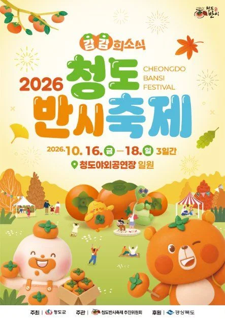
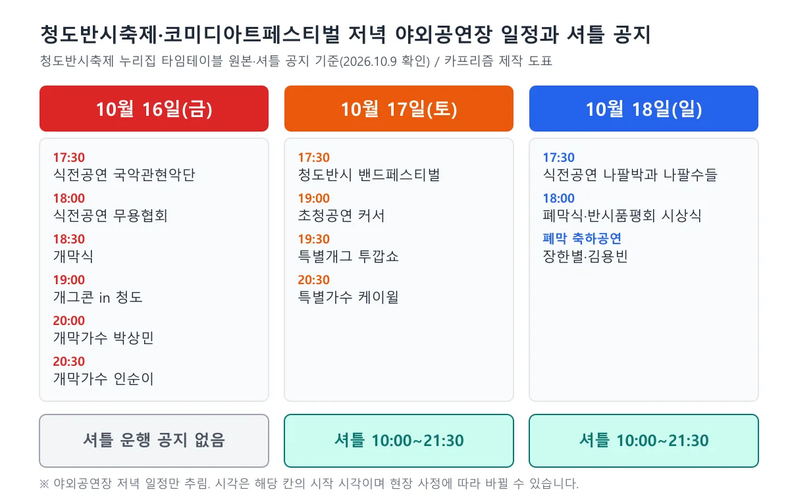
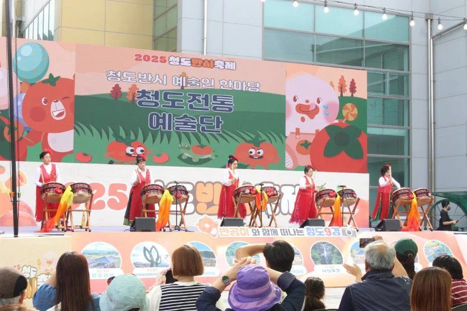
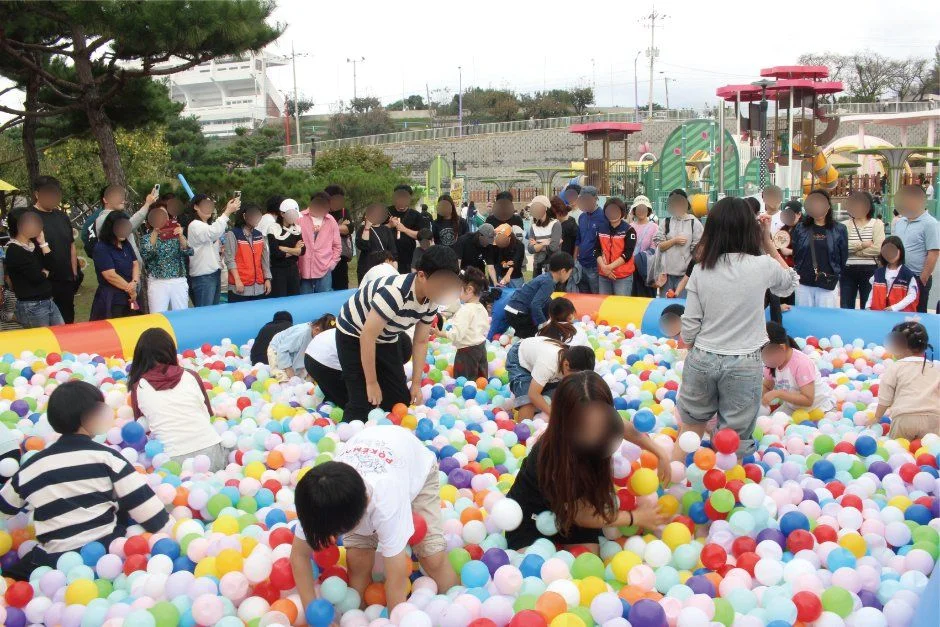
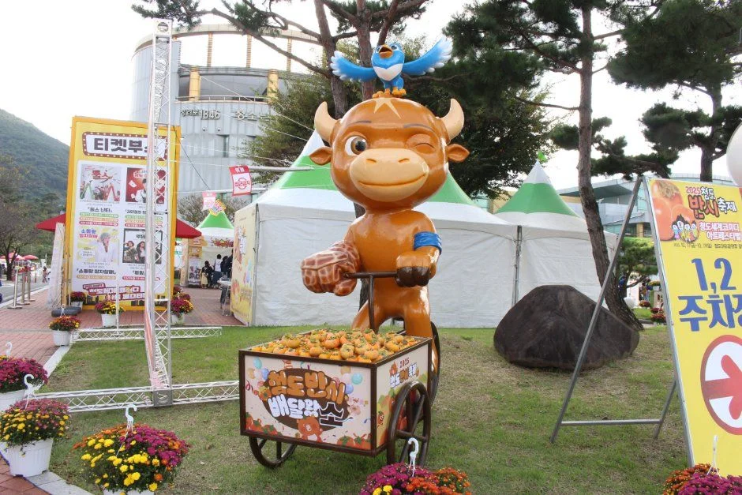
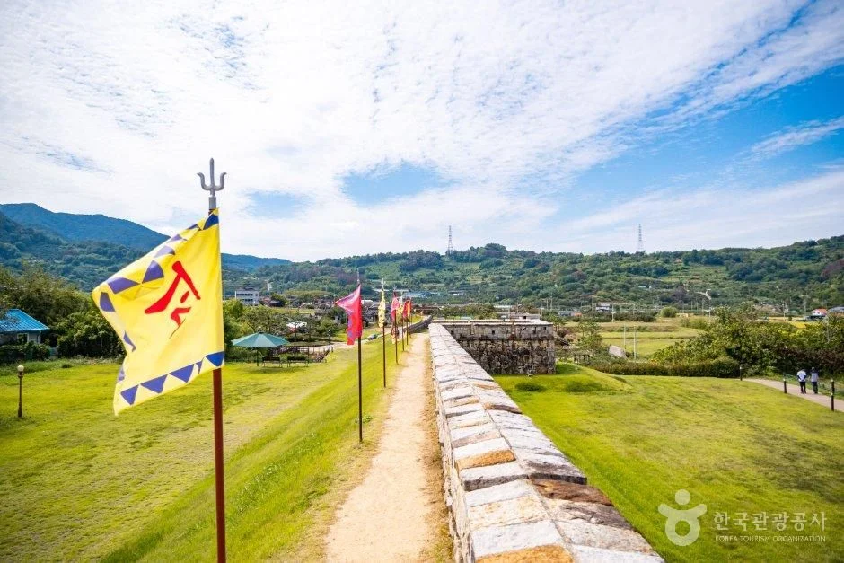
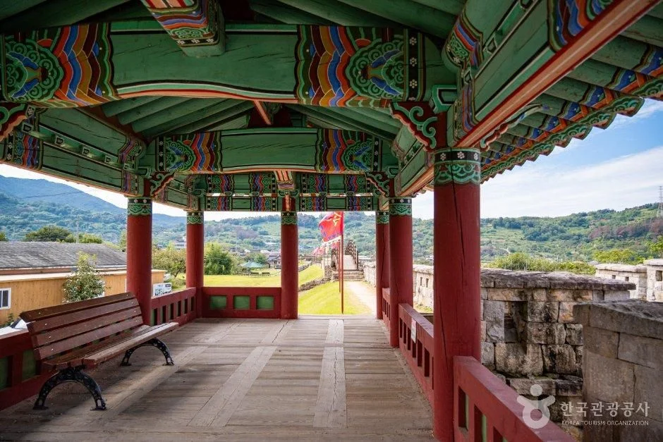
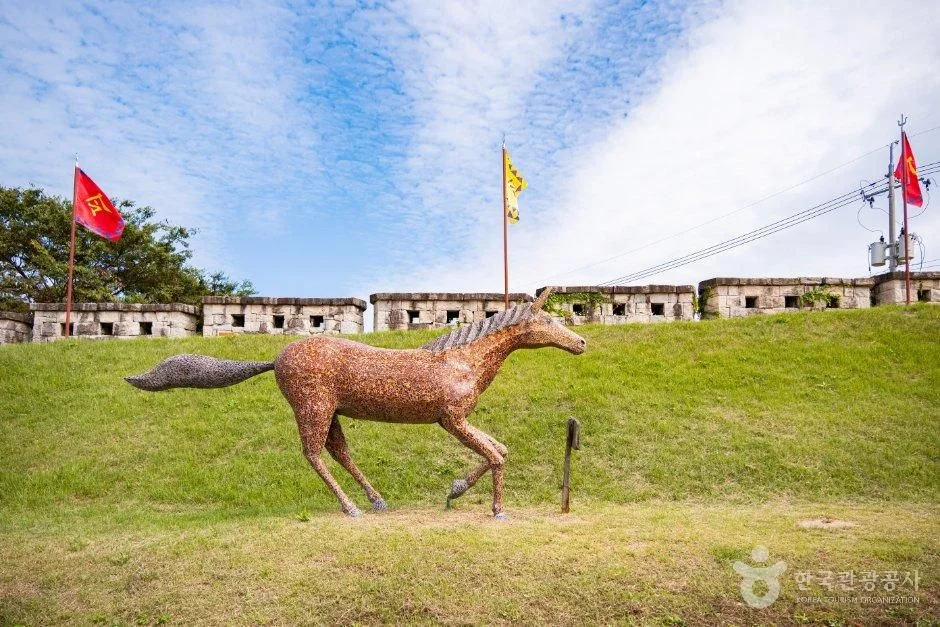
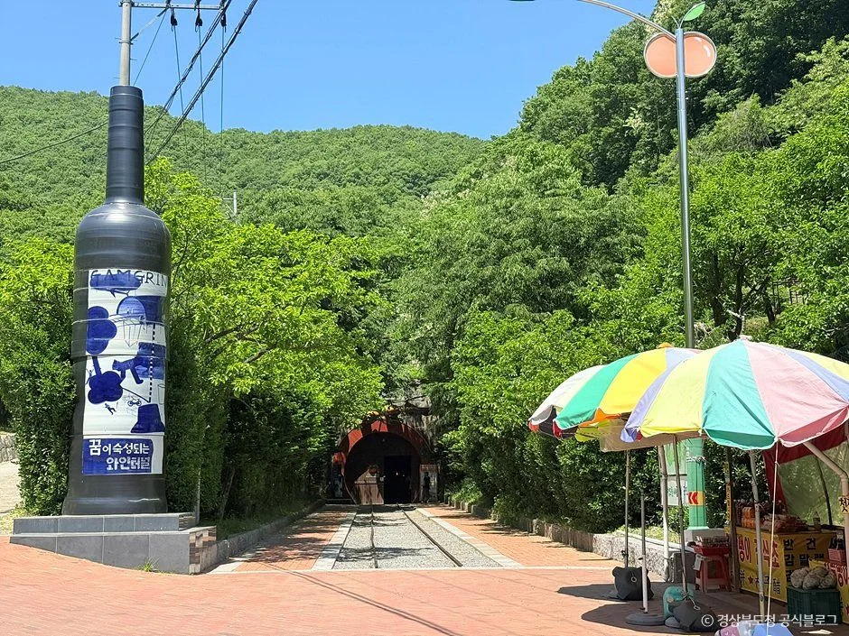

▲ 반시 모양 대형 조형물이 놓인 행사장 사진(한국관광공사 청도반시축제 항목). 촬영 연도는 확인하지 못했다. 사진=한국관광공사
"금요일 개막 날 차를 끌고 갔는데 셔틀이 없다면?" 2026 청도반시축제와 청도세계코미디아트페스티벌이 10월 16일(금)부터 18일(일)까지 청도야외공연장 일원에서 동시에 열린다. 개막이 일주일 앞으로 다가온 지금, 청도군 공식 누리집과 청도반시축제 누리집을 직접 열어 보니 핵심은 하나였다. 셔틀버스는 10월 17일(토)과 18일(일) 10:00~21:30 운행만 공지돼 있고, 개막일인 16일 운행은 공지에서 찾지 못했다. 16일에 운행하지 않는다는 문구가 있는 것은 아니고, 운행한다는 문구도 없다는 뜻이다. 이 글은 일정, 셔틀 4개 노선과 임시주차장 3곳, 반시 디저트 체험 예약, 무료 실내공연 사전신청, 코미디 프로그램 시각, 근처 청도 명소를 공식 자료 기준으로 정리한다. 교통통제 구간과 주차료처럼 공식 안내가 보이지 않는 항목은 끝에 따로 적었다.
1. 한눈에 보기 — 일정·장소·요금
청도군 공식 누리집 메인과 청도반시축제 공식 누리집(축제정보 페이지)이 같은 일정을 안내한다. 축제 주제는 "감감희소식"이고, 주최·주관은 청도군과 청도반시축제추진위원회다. 한국관광공사 TourAPI 행사 정보에는 이용 요금이 "무료", 행사 시간이 "11:00 ~ 20:00"으로 등록돼 있다. 다만 축제 누리집의 공식 타임테이블은 16·17일 공연이 21:00까지 이어지고 낮 프로그램은 11:30부터 시작하므로, 시간은 TourAPI 등록값보다 공식 타임테이블을 기준으로 보는 편이 안전하다.
| 항목 | 내용 | 확인 출처 |
|---|---|---|
| 기간 | 2026년 10월 16일(금)~18일(일), 3일간 | 청도반시축제 누리집·청도군 공식 이미지·TourAPI |
| 장소 | 청도야외공연장 일원(경북 청도군 화양읍 청려로 1846) | 청도반시축제 누리집 교통안내 |
| 요금 | 무료(TourAPI 행사 정보). 반시 월드 디저트 만들기 체험은 5,000원 | TourAPI·청도반시축제 공지(10월 7일) |
| 행사 시간 | TourAPI 등록 11:00~20:00. 공식 타임테이블은 10:00부터 21:00까지 칸이 있고, 첫 프로그램은 세 날 모두 11:30(광장무대 청도 예술인 한마당), 마지막은 16·17일 20:30~21:00 가수 공연 | 두 자료가 다름 |
| 셔틀 | 10월 17~18일 10:00~21:30, 4개 노선(16일은 공지 없음). 공지에는 요금 문구가 없고 언론 3곳이 "무료"로 보도 | 청도반시축제 공지(10월 7일)·언론 보도 |
| 문의 | 청도반시축제 운영사무국 054-370-2211, 청도군 054-370-6211(TourAPI), 코아페 공연예매 문의 070-4090-4312(평일 10:00~18:00) | 축제 누리집·TourAPI·코아페 누리집 |
| 실내 코미디 공연 | 무료, 사전신청(네이버 예약) 후 티켓 수령해 입장 | 코아페 공지(9월 18일) |
| 교통통제·주차료 | 공식 안내를 확인하지 못했다 | — |
ℹ️ 공식 안내는 이 두 곳에서
일정표와 셔틀 안내, 사전예약 공지는 청도반시축제 누리집에 올라 있다. 청도반시축제 누리집 바로가기 군 차원의 안내는 청도군 누리집 메인 화면에서 볼 수 있다. 청도군 누리집 바로가기

▲ 한국관광공사 청도반시축제 항목에 실린 2026 청도반시축제 포스터. 감 캐릭터와 "2026 청도반시축제" 문구가 들어 있다. 사진=한국관광공사
2. 셔틀·주차 — 개막일 16일이 변수다
청도반시축제 누리집 공지(10월 7일 게시)는 "축제 기간에는 행사장 주변이 매우 혼잡할 수 있다"며 10월 17일(토)~18일(일) 10:00~21:30 셔틀버스를 운영한다고 적었다. 가급적 임시주차장에 주차한 뒤 셔틀을 이용하라는 안내도 함께 있다. 공지와 청도군 누리집의 안내 이미지에서 16일 운행 일정은 보이지 않는다. 헤럴드경제·대경일보·경북매일은 "4개 노선 무료 셔틀, 20분 간격"만 전해 날짜를 적지 않았다("무료"는 이 보도들의 표현이고 공지 문구에는 요금 언급이 없다). 그래서 개막식(16일 18:30)에 맞춰 차로 가는 사람은 셔틀 없이 이동해야 할 가능성을 열어 두고, 출발 전에 운영사무국(054-370-2211)에 16일 운행 여부를 물어보는 편이 안전하다.
| 코스 | 방면 | 경로 | 배차 |
|---|---|---|---|
| 1 | 청도천변 | 청도천둔치 → 파랑새다리 → 보건소 → 행사장(순환) | 20분 간격 |
| 2 | 청도군청 | 청도군청 → 코아루아파트 → 행사장(순환) | 20분 간격 |
| 3 | 서상리 | 청도농협 농산물산지유통센터 → 청도읍성 서문(서문주차장) → 화양읍사무소 → 향교 → 행사장(순환) | 20분 간격 |
| 4 | 청도역 | 청도역 → 행사장(순환) | 기차 시간에 맞춰 운행 |
| 코스 | 임시주차장 | 주소 |
|---|---|---|
| 1 | 청도천둔치 | 청도읍 고수리 1039-146, 화양읍 송북리 3-3(파랑새다리) |
| 2 | 청도군청 | 화양읍 청화로 70 |
| 3 | 청도농협 농산물산지유통센터 | 화양읍 도주관로 45 |
✅ 자차 방문 전 체크
· 17~18일은 임시주차장 3곳 중 한 곳에 세우고 셔틀로 이동(공식 권장)
· 16일 셔틀·임시주차장 운영 여부는 공식 안내에 없음 → 운영사무국 054-370-2211 문의
· 임시주차장 수용 대수·주차료, 도로 통제 구간·시간은 공식 안내를 확인하지 못했다
· 내비게이션은 행사장 "청도야외공연장"(청려로 1846) 기준
3. 사흘 일정 — 개막식 18:30, 인순이는 20:30
청도군 누리집 팝업의 타임테이블은 청도반시축제 누리집(축제일정 페이지)에 올라 있는 원본 이미지(2,482×2,997픽셀)와 같은 자료다. 군 누리집의 작은 이미지는 글씨가 흐렸지만 이 원본을 확대해 칸마다 시각과 이름을 다시 읽었다. 타임테이블은 야외공연장·실내극장·광장무대 세 곳의 공식·반시·초청·실내 프로그램을 시간대별로 보여 준다. 이 글은 야외공연장의 저녁 일정을 표로 두고, 낮 코미디 공연은 5장에 정리했다. 출연진 이름은 타임테이블, 코아페 누리집, 언론 보도(헤럴드경제·대경일보·경북매일)를 맞춰 확인했다.

▲ 축제 누리집 타임테이블 원본과 셔틀 공지를 바탕으로 정리한 도표. 시각은 해당 공연 칸이 시작되는 시각이다. 카프리즘 제작 도표
| 날짜 | 시각 | 프로그램 |
|---|---|---|
| 10월 16일(금) | 17:30 | 식전공연(국악관현악단, 청도중앙초등학교) |
| 10월 16일(금) | 18:00 | 식전공연(무용협회) |
| 10월 16일(금) | 18:30 | 개막식 |
| 10월 16일(금) | 19:00~20:00 | 개막 축하공연 "개그콘 in 청도"(박휘순·임우일·정승환, 언론 보도) |
| 10월 16일(금) | 20:00 / 20:30 | 개막 가수공연① 박상민 / ② 인순이(각 30분 칸) |
| 10월 17일(토) | 17:30~19:00 | 2026 청도반시 밴드페스티벌(청소년 7팀·성인 7팀 본선, 언론 보도) |
| 10월 17일(토) | 19:00 / 19:30 / 20:30 | 초청공연 커서 / 특별 개그공연 투깝쇼(19:30~20:30) / 특별 가수공연 케이윌 |
| 10월 18일(일) | 17:30 | 식전공연(나팔박과 나팔수들) |
| 10월 18일(일) | 18:00 | 폐막식·반시품평회 시상식·폐막 축하공연(장한별·김용빈) |
위 표의 시각은 칸이 시작되는 시각이고, 공연 순서와 시각은 현장 사정에 따라 바뀔 수 있다. 일부 칸의 이름(식전공연 단체명, 17일 초청공연 '커서')은 작은 글씨를 읽은 것이다. 헤럴드경제가 17일 청도읍성에서 열린다고 전한 "찾아가는 코미디 버스킹"은 공식 타임테이블과 대경일보 보도에서 확인되지 않아 시각을 알 수 없다(타임테이블 광장무대에는 낮 시간 버스킹 칸이 따로 있다). 청도반시 밴드페스티벌은 참가자 모집 공고에서 본선 무대 경연일을 17일로 안내했고, 언론은 전국 50여 팀 가운데 사전 심사를 통과한 14팀이 겨룬다고 전했다.

▲ 한국관광공사 청도반시축제 항목에 실린 야외 무대 공연 사진. 올해 현장 사진인지는 확인하지 못했다. 사진=한국관광공사
4. 반시축제 — 키즈랜드·디저트·황금반시
한국관광공사 TourAPI에 등록된 프로그램은 네 갈래다. 개·폐막식 축하공연과 청도반시 밴드페스티벌이 메인, 상설 공연과 반시 ESG 체험이 부대 프로그램이다. 소비자 참여 프로그램으로는 반시키즈랜드, 인간반시자판기, 반시게임보이를 이겨라, 감식초족욕체험, 황금반시를 찾아라가 적혀 있고, 쉼터와 먹거리 식당이 함께 운영된다. 언론 보도에는 반시 디저트 월드 투어, 청도 ESG 실천체험, 명품 청도반시 전시·판매관, 청도차산농악 공연, 청도어린이 특별공연(사물놀이패·국악 관현악단·발레)이 추가로 나온다.
유료 체험 중 공식 근거가 가장 확실한 것은 "반시 월드 디저트 만들기"다. 10월 7일 올라온 청도반시축제 공지에 따르면 반시모찌, 반시타르트, 반시 스모어 쿠키 3종을 모두 만드는 체험 참가비는 5,000원이고, 사전접수는 시간대별 20명이다. 신청 방식은 사전예약 링크 접속, 시간 예약, 참가비 입금, 최종 신청 순이며 입금까지 마쳐야 접수가 완료된다. 마감되지 않은 시간대는 현장접수도 가능하다. 스탬프투어에 참여하면 마그넷을 주는 것으로 공지돼 있다. 디저트 만들기 공지 바로가기

▲ 한국관광공사 청도반시축제 항목에 실린 어린이 볼풀 놀이 공간 사진. 반시키즈랜드와 같은 유형의 프로그램이지만 올해 현장 사진인지는 확인하지 못했다. 사진=한국관광공사
▲ 반시 모양 대형 조형물이 놓인 행사장 사진(한국관광공사 청도반시축제 항목). 촬영 연도는 확인하지 못했다. 사진=한국관광공사
ℹ️ 영수증 환급 이벤트
언론 보도에는 지역 업체에서 쓴 영수증을 내면 타폴린 백 또는 청도사랑상품권으로 환급해 주는 이벤트가 나온다. 대상 업종·금액 기준과 환급 한도는 공식 안내에서 확인하지 못했다.
5. 코미디아트페스티벌 — 무료 실내공연은 사전신청부터
코미디 쪽은 펀펀 스테이지와 실내체육관 코미디클럽으로 나뉜다는 것이 언론 보도(헤럴드경제·대경일보·경북매일)의 공통 내용이다. 청도세계코미디아트페스티벌 누리집(주제 "대한민국 코미디 1번지, 청도!")이 공연별 날짜와 시각을 공개했고, 반시축제 타임테이블 원본과 칸마다 일치했다. 해외 초청은 일본 아크로바틱 팀 쇼고무조 브라더스와 말레이시아 마술사 에런팡 벌룬쇼, 국내 초청은 팀클라운·슈가와 마리오·인도마술사 박준영·재주왔쇼다.
실내 공연 4종은 전부 무료이지만 사전신청과 티켓 수령이 필요하다. 코아페 누리집이 9월 18일 올린 공지에 따르면 실내공연은 티켓을 받아야 입장할 수 있고, 티켓은 현장 티켓부스에서 공연 2시간 전부터 교환한다. 입장은 공연 시작 40분 전부터 10분 전까지이고, 자유석이라 입장 순서대로 앉는다. 사전 신청 인원만큼만 교환되며 추가 인원은 공연 1시간 전부터 현장 티켓을 받는다. 1층 티켓이 떨어지면 2층 티켓을 선착순으로 나눠 준다. 신청은 네이버 예약 링크로 받고 선착순이라 일찍 마감될 수 있다. 실내공연 사전신청 공지 바로가기 지금 신청이 열려 있는지, 어느 회차가 마감됐는지는 확인하지 못했다. 문의는 koreacomm4312@naver.com 또는 070-4090-4312(평일 10:00~18:00, 주말·공휴일 휴무)다.
| 구분 | 공연 | 시각 |
|---|---|---|
| 실내(무료·사전신청, 60분) | 최진사댁 셋째딸 신랑찾기 | 16일 14:00·17:00 / 17일 13:00 / 18일 13:00 |
| 실내(무료·사전신청, 60분) | 심현섭쇼 | 17일 17:00 / 18일 15:00 |
| 실내(무료·사전신청, 60분) | 투맘쇼 | 17일 15:00 |
| 실내(무료·사전신청, 60분) | 졸탄쇼 | 18일 17:00 |
| 해외초청 | 쇼고무조 브라더스 | 16일 15:00 / 17일 13:00 |
| 해외초청 | 에런팡 벌룬쇼 | 16일 14:30 / 17일 13:30 / 18일 14:30 |
| 국내초청 | 팀클라운 | 16일·18일 12:00·13:00 |
| 국내초청 | 슈가와 마리오 | 16일 12:30·13:30 / 17일 12:30·14:30 / 18일 12:30·13:30 |
| 국내초청 | 인도마술사 박준영 | 17일 12:00·14:00 |
| 국내초청 | 재주왔쇼 | 16일 14:00·15:30 / 17일 15:00·16:30 / 18일 14:00·16:00 |
| 야외 저녁 | 개그콘 in 청도 / 특별개그 투깝쇼 | 16일 19:00 / 17일 19:30(3장 표) |
| 찾아가는 코미디 버스킹(신설) | 청도읍성 일대 | 헤럴드경제만 17일로 보도, 시각 미확인 |

▲ 감을 실은 수레 옆에 선 소 캐릭터 조형물과 부스 사진(한국관광공사 청도반시축제 항목). 올해 현장 사진인지는 확인하지 못했다. 사진=한국관광공사
6. 대중교통·자차 접근
청도반시축제 누리집의 교통안내는 행사장 주소를 "경북 청도군 화양읍 청려로 1846"으로 적고, 대중교통을 이용하면 청도역·청도시외버스정류장에서 축제장까지 10분이라고 안내한다. 대구 쪽은 동대구터미널(복합환승센터)에서 경산을 거치는 노선, 팔조령터널·이서면을 거치는 노선, 헐티재를 넘는 노선이 청도버스정류장으로 이어진다고 소개한다. 창녕과 밀양에서도 청도버스정류장으로 오는 노선이 적혀 있다. 버스 문의는 청도버스 054-371-5100, 경산버스 053-801-8347이다. 같은 페이지는 "청도역, 청도시외버스정류장~축제장(10분) / 20분 간격 운행"이라고 적었는데, 10분이 이동 시간인지 셔틀 소요인지, 20분 간격이 어느 날부터인지는 문구만으로 알 수 없다. 노선별 운행 시각과 요금은 확인하지 못했다.
| 수단 | 확인된 내용 | 확인 못한 내용 |
|---|---|---|
| 기차·버스 | 청도역·청도시외버스정류장에서 축제장까지 10분(공식 교통안내). 셔틀 4코스는 기차 시간에 맞춰 운행 | 열차·버스 시간표 |
| 자차 | 임시주차장 3곳과 셔틀(17~18일) | 수용 대수·주차료·16일 운영, 도로 통제 |
| 택시 | — | 공식 안내 없음 |
7. 축제 전후 청도 한 바퀴 — 읍성·와인터널·레일바이크·운문사
청도군 관광 누리집의 "청도관광 9경"에서 확인되는 곳 중 행사장 가까운 곳은 청도읍성(화양읍 동상리 48-1, 054-370-2063)이다. 군 설명에 따르면 고려 때부터 축성된 것으로 추정되며 2008년부터 복원 중이다. 17일 코미디 버스킹이 열리는 곳으로 보도된 데다, 셔틀 3코스가 읍성 서문을 지난다. 와인터널(화양읍 송금길 85, 054-371-1904)은 1904년 완공된 길이 1km 터널이라고 군이 소개한다(TourAPI는 송금길 100으로 표기해 주소 표기가 다르다). 청도레일바이크(청도읍 하지길 46-51, 054-373-2426)는 폐선된 철길을 따라 청도천변 약 5km를 달린다. 와인터널은 안성·청도 와인 드라이브 기사에서 따로 다뤘다. 이 글에서는 이동 시간과 운영 시간을 확인하지 못해 장소만 소개한다.

▲ 청도읍성 성곽 위 길과 깃발. 한국관광공사 청도읍성 항목 사진으로 촬영 계절은 확인하지 못했다. 사진=한국관광공사

▲ 성곽 위에 세운 누각과 멀리 보이는 산줄기(청도읍성). 촬영 계절은 확인하지 못했다. 사진=한국관광공사

▲ 청도읍성 잔디밭의 말 조형물. 성벽을 따라 깃발이 이어진다. 사진=한국관광공사

▲ 청도 와인터널 입구의 대형 병 조형물과 터널 입구(한국관광공사 청도 와인터널 항목). 사진=한국관광공사
운문사(운문면 운문사길 264, 054-372-8800)는 군 설명에 "신라 진흥왕 21년(원년) 창건, 원광법사가 중창해 세속오계를 내려 화랑정신의 발원지가 되었다"고 되어 있다. 군 안내는 전국 최대 규모 비구니 승가대학으로 소개한다. 입장료, 개방 시간, 주차, 가을 풍경 시기는 이번 확인에서 공식 안내를 찾지 못했고, 행사장에서 운문면까지 이동 시간도 확인하지 못했다. 가을 단풍 시기를 말할 공식 근거도 없어 날짜는 쓰지 않는다. 운문사는 읍내 행사장과 생활권이 달라 하루에 묶을 때는 별도 일정으로 잡는 편이 낫다는 것이 이 글의 판단이다.
8. 같은 주말 다른 곳과 겹칠 때
10월 16~18일에는 전국 곳곳에서 행사가 겹친다. 카프리즘이 이미 다룬 같은 주말 행사는 목포항구축제, 마포나루 새우젓축제, 세종 초정약수축제, 태백 철암단풍축제가 있다. 보은대추축제(10월 16~25일)는 속리산 단풍과 함께 정리했다. 단풍 일정은 산림청 절정 예측일 기준 주말표와 산림청 지도 기사에서 볼 수 있다.
| 항목 | 상태 |
|---|---|
| 도로 통제 구간·시간 | 청도군·축제 누리집에 안내 없음 |
| 입장료 세부 | TourAPI "무료", 실내 코미디 4종은 코아페 공지로 무료 확인. 그 밖의 공연별 유료 여부는 확인 못 함 |
| 실내공연 사전신청 현재 마감 여부 | 확인 못 함(네이버 예약 페이지) |
| 16일 셔틀·임시주차장 | 공지에 17~18일만 표기(운행 안 한다는 문구는 없음) |
| 임시주차장 수용 대수·요금 | 확인 못 함 |
| 운문사 입장·시간·단풍 시기 | 확인 못 함 |
9. 정리
2026 청도반시축제와 청도세계코미디아트페스티벌은 10월 16~18일 청도야외공연장 일원에서 동시에 열린다. 개막식은 16일 18:30, 개막 가수공연은 박상민(20:00)·인순이(20:30), 17일은 밴드페스티벌과 케이윌(20:30), 18일은 18:00 폐막식과 장한별·김용빈 공연이다. TourAPI에는 무료로 등록돼 있고, 실내 코미디 공연 4종은 무료이지만 사전신청 후 티켓을 받아야 하며, 반시 월드 디저트 만들기는 5,000원이다.
셔틀 4개 노선은 17~18일 10:00~21:30 운행이 공지됐고(언론은 무료로 보도) 16일은 공지에 없다. 임시주차장은 청도천둔치·청도군청·청도농협 농산물산지유통센터 3곳이다. 교통통제와 주차료는 공식 안내를 확인하지 못했으므로 출발 전 운영사무국(054-370-2211)에 확인하자.